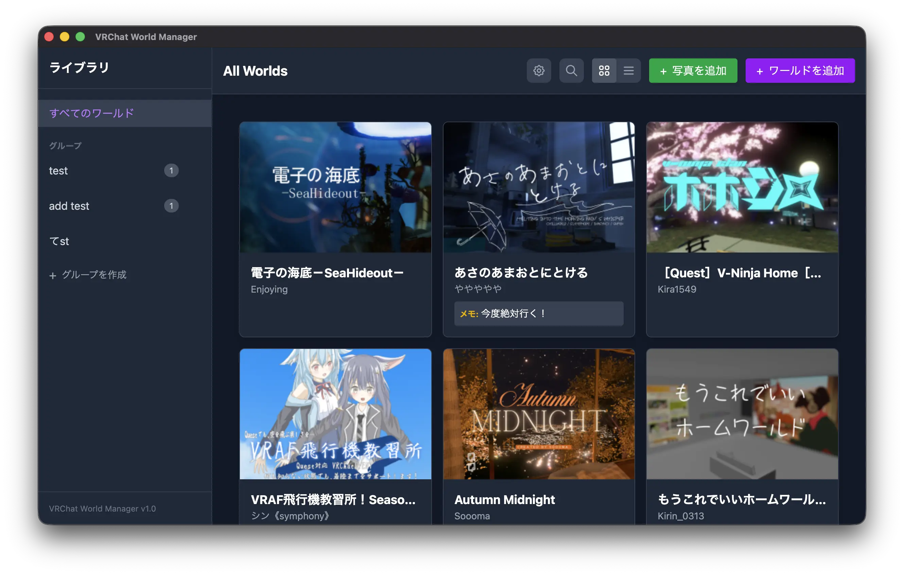
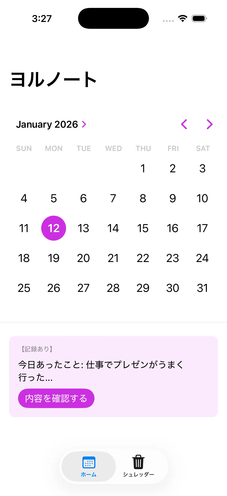
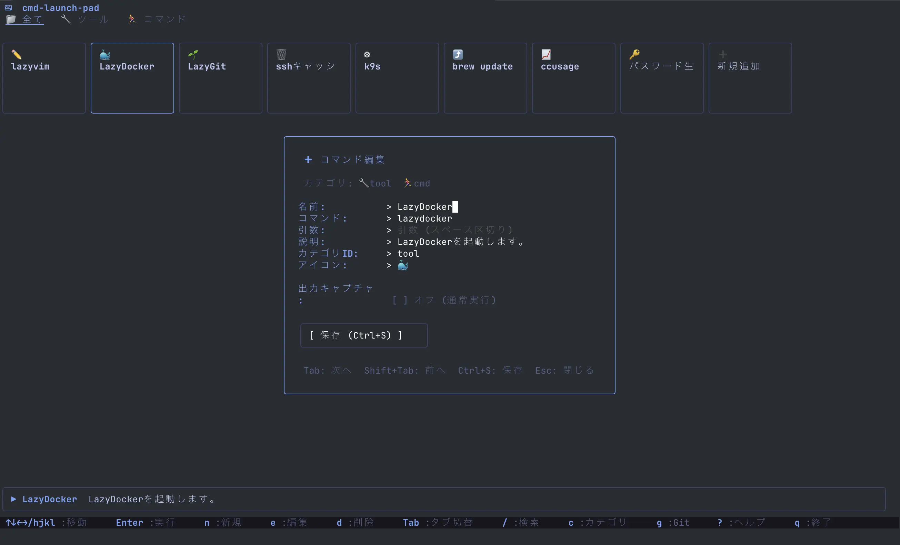
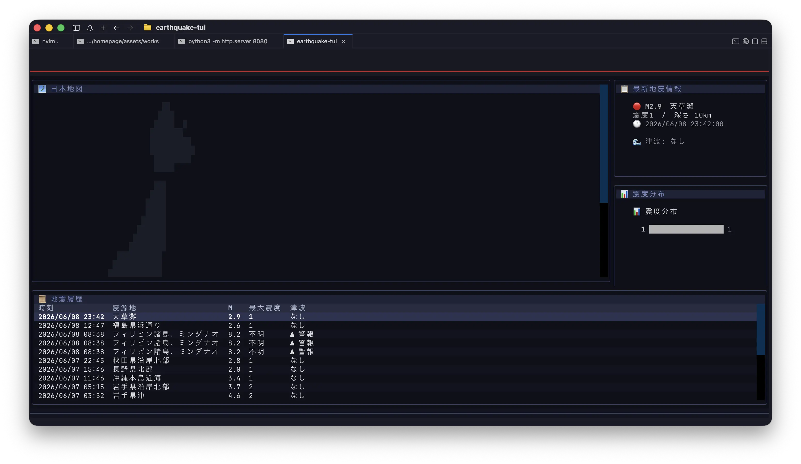
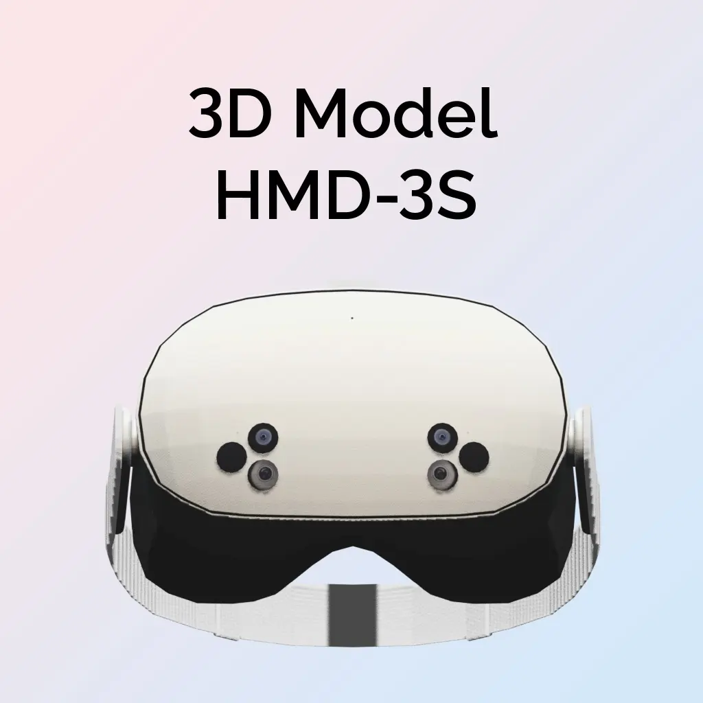
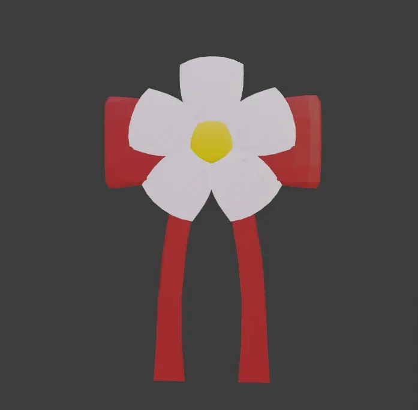
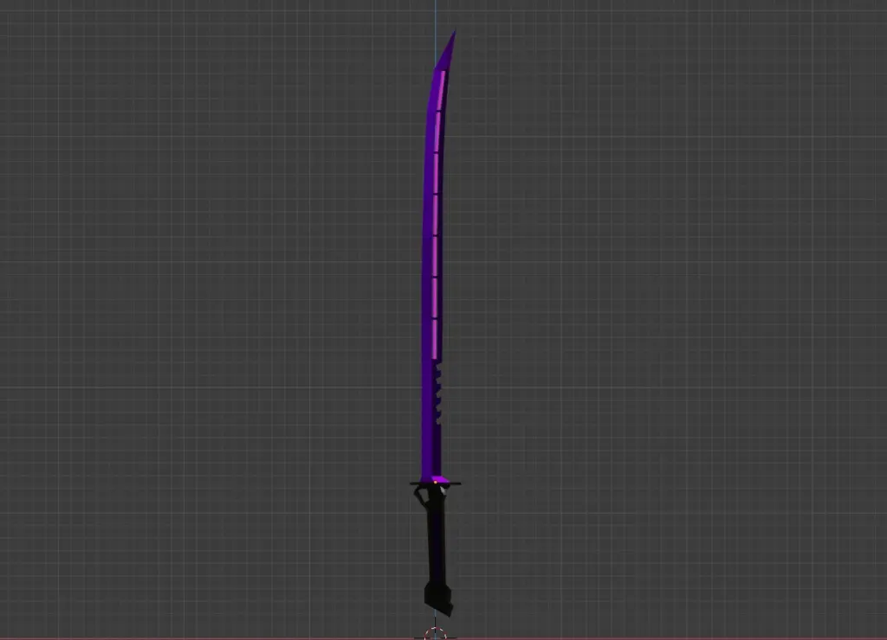

プログラムとか3Dモデルとかいろいろ置いてます。
| ｽｸｼｮ | 名前 | 説明 | ﾘﾝｸ |
|---|---|---|---|
 |
VRChat World Manager |
VRChatのワールドを管理するためのデスクトップアプリ。 VRChatで訪れたワールドや、行きたいワールドを管理するためのデスクトップアプリケーション。写真のメタデータから自動的にワールド情報を取得し、グループ分けや検索が可能です。VRChatアカウントを用いたログインが不要で使用できるのが特徴です。 |
GitHub |
 |
ヨルノート |
夜の3分間で、心をリセットして眠りにつくための場所★ 「ヨルノート」は、今日一日の出来事や感情を整理し、モヤモヤをすっきり手放してから眠りにつくためのセルフケアアプリです。 |
GitHub |
 |
cmd-launch-pad |
ターミナルユーザー向けのTUIコマンドランチャー。 nvim、lazygit、lazydocker などのコマンドを視覚的に管理・起動できます。 コマンドを覚えられないので作りました。 |
GitHub |
 |
TUI強震モニタ |
ターミナル上で動作するリアルタイム地震情報モニターアプリケーション。 P2P地震情報 API v2 を利用して、地震情報・津波予報をリアルタイムに表示します。 AIを使って開発してみましたが、やはりアスキーアートは苦手なようで歪な日本地図が表示されます。 |
GitHub |
| ｽｸｼｮ | 名前 | 説明 | ﾘﾝｸ |
|---|---|---|---|
 |
HMD-3S | VRChatやUnityでの使用を想定した |
Booth |
 |
花の髪飾り | 何の花かわかりませんが、とりあえずお花の形をした髪飾りです。 | Booth |
 |
近未来的な刀 | 近未来的な形をした刀のモデルです。 VRChatに入って間もない頃に作成したのですが、一番いいね数が多い。ありがたいですね。 |
Booth |